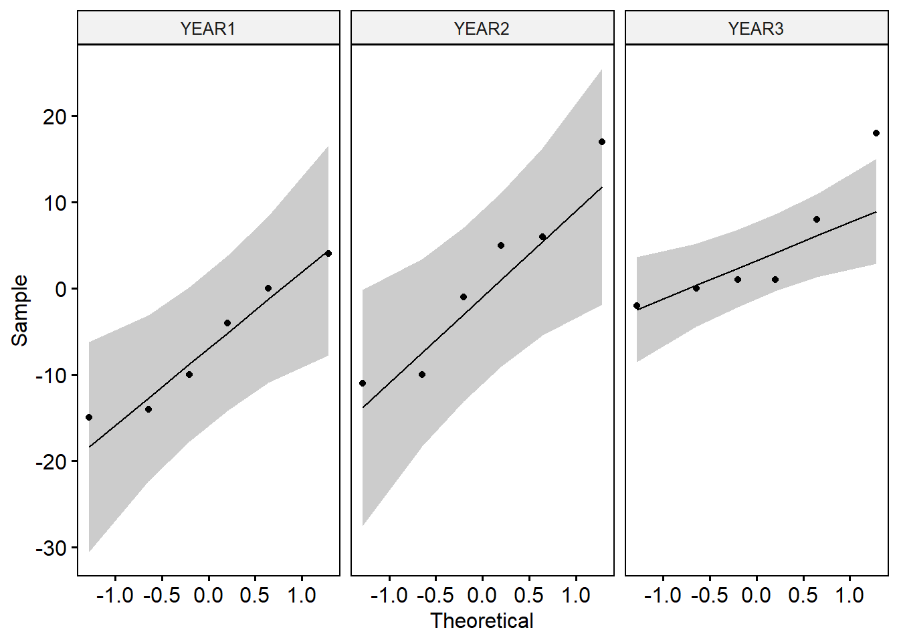
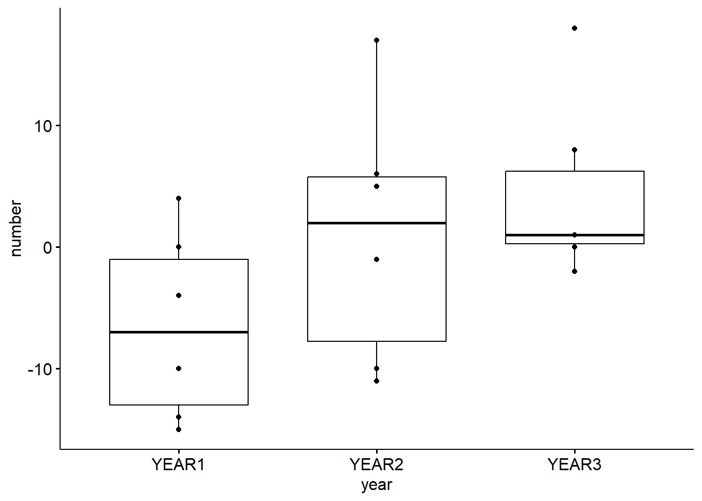

# get the data
df <- read.csv("data/driscoll1.csv")One-way repeated measures ANOVA
A one-way repeated measures ANOVA is used when you want to test for differences between three or more related groups (conditions, time points, etc.), where the same subjects or experimental units are measured multiple times under different conditions or over time. This type of ANOVA takes into account the fact that the measurements are not independent because they come from the same subjects.
Key Concepts of One-Way Repeated Measures ANOVA:
One-way: Refers to having only one factor (independent variable) with multiple levels (e.g., different time points, conditions, or treatments).
Repeated measures: Means that the same subjects (or experimental units) are measured multiple times, under each level of the independent variable.
Within-subject design: Since measurements are taken on the same subject, the variability due to individual differences is controlled, making the analysis more sensitive to detecting differences across conditions.
Assumptions:
Sphericity: The variances of the differences between all combinations of related groups should be equal. This is a key assumption for repeated measures ANOVA. Violations of sphericity can be tested using Mauchly’s test.
Normality: The dependent variable should be approximately normally distributed within each level of the repeated measure factor.
Independence: Although measurements are repeated, observations within a group (e.g., different subjects) should still be independent of each other.
Note
Data we’ll use: driscoll1.csv (chap 10), boîte 10.2 p.266 Quinn & Keough
# view the data
DT::datatable(df)Preparing the data
The data has a wrong format. The years should be a categorical column
library(tidyr)
library(tidyverse)
library(ggpubr)
library(rstatix)
df$id <- c(1:6)
df <- pivot_longer(df,
cols = 1:3,
names_to = "year",
values_to = "number")
df$year <- as.factor(df$year)Normality assumption
ggqqplot(df, "number", facet.by = "year")
From the plot above, as all the points fall approximately along the reference line, we can assume normality, apart from 1 point.
Visualization
ggboxplot(df, x = "year", y = "number", add = "point")
Testing for Sphericity: Mauchly’s Test of Sphericity
model <- anova_test(data = df, dv = number, wid = id, within = year)
model$ANOVA Effect DFn DFd F p p<.05 ges
1 year 2 10 9.66 0.005 * 0.244model$`Mauchly's Test for Sphericity` Effect W p p<.05
1 year 0.596 0.355 model$`Sphericity Corrections` Effect GGe DF[GG] p[GG] p[GG]<.05 HFe DF[HF] p[HF] p[HF]<.05
1 year 0.712 1.42, 7.12 0.013 * 0.915 1.83, 9.15 0.006 *